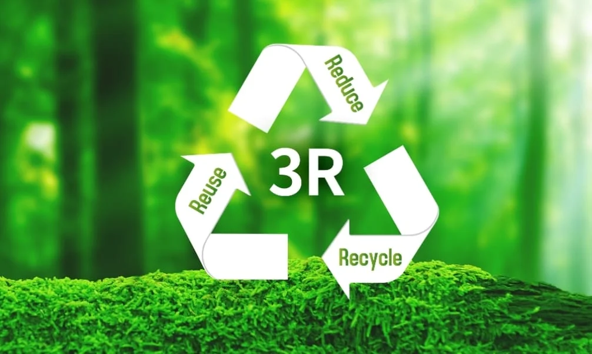

El reciclaje es el proceso donde tenemos que recolectar, reutilizar y reducir el uso de contaminantes que afectan severamente al planeta,en usar o tirar botellas, palsticos o cartones, el recicalaje insentiva y promueve la reutilizacion de esos materiales para evtiar que se generen mas y afecten severamente a nuestro planeta y a nuestra comunidad, otra de las definiciones de el reciclaje explicada de forma simple es darle una segunda vida a cosas que ya usaste en vez de hacer más basura.
Estos procesos forman parte de las 3 Rque son Reducir Reutilizar y reciclar, y es una de las mejores y más importantes de proteger y cuidar el medio ambiente, ya que ayuda a disminuir la cantidad de desechos y basura, ahorrar recursos naturales, ahorrar energía y reducir la cantidad de contaminación que se produce al fabricar productos desde cero.

Los materiales más comunes que se pueden recilar son el papel, el carton, plastico, vidrio, aluminio, metal y restos organicos. Tambien se puden reciclar aparatos electronicos y ropa
la diferencia es que reutilizar es volver a usar algo tal como está, por ejemplo usar una botella como una maceta, pero el reciclar es transformar ese material para fabricar un nuevo producto nuevo, como puede ser el fundir la botella para hacer otra botella
El reciclaje es importante ya que si no reciclamos, todo terminaria en las calles, rios o en basureros que se llenan rapidisimo, además al reciclar papel no tienes que cortar tantos arboles que son importantes, al reciclar plastico y vidrio no gastas tanto pertróleo ni arena,al reciclar aluminio ahorras mucha energía por lo que al farbicar cosas nuevas desde cero contaminas el aire y el agua que haciendolas con materiales ya reciclados.
También es importante porque nos permite ahorrar recursos naturales,cuando reciclamos evitamos que eso pase. Al separar y transformar los materiales en nuevos productos reducimos la cantidad de basura que se genera y alargamos la vida de los basureros que cada dia estan más llenos
En resumen , reciclar nos permite aprovechar lo que ya tenemos, proteger la naturaleza y un planeta más limpio para el futuroalgunos ejemplos de poque es importante el reciclaje son: